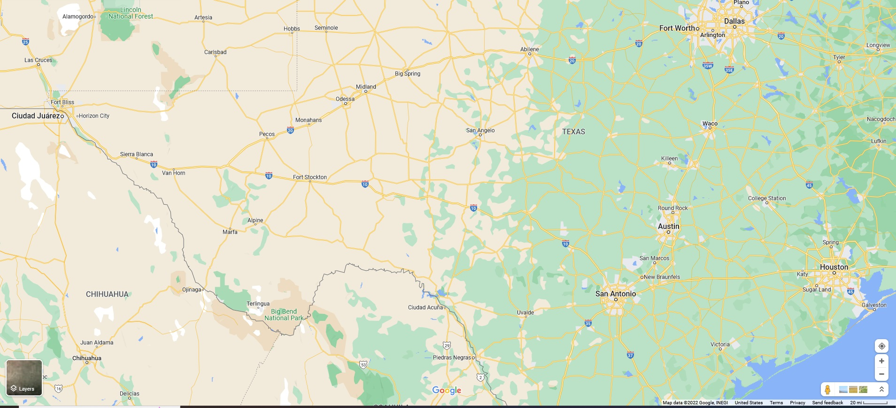

It's a long way to go...
I've taken a few trips to West Texas, for work and play, most recently with my spouse. I'd like to share a few of the reasons I think this is a special place with you, along with pictures!
The Menger Hotel
Built in 1859, right next to the Spanish Mission (the "Alamo"), this boarding house has hosted Native Americans, presidents, poets, actors, generals, singers and the public of the world.
One of my favorite spots is the cherry-wood bar modeled after the House of Lords Club taproom in London, which is touted as "The birthplace of Roosevelt's Roughriders."
I prefer to think of it as an intimate little watering hole.
The hotel has touches of luxury throughout, with marble floors and columns, ornate columns and banisters along with fancy wallpaper.
Del Rio, Texas
Del Rio sits in the Rio Grande River Valley, where the river takes its final turn southeast toward the Gulf of Mexico.
The area is a bit of a watersport mecca, as Del Rio and her sister city in Mexico, Ciudad Acuña, sit at the confluence of the Rio Grande, Pecos River and Devils River.
These waters have been dammed up to form the Amistad Reservoir, which along with all of the limestone cliffs and sparse vegetation provides beautiful backdrops for sunset photos.
The bridges over Amistad may be longer, but my favorite is the short span over the Pecos River, with it's dramatic cliffs with caves in and sprinkling of nopales hanging on to the edge.
Langtry & Judge Roy Bean, Law West of the Pecos
Langtry lies on Highway 90, west of Del Rio.
In 1882 the Southern Pacific line established a grading camp near the Eagle Nest crossing of the Rio Grande to facilitate joining with the Galveston, Harrisburg and San Antonio Railway at Langtry.
Roy Bean was a milk man in San Antonio, and (somehow?) was appointed Justice of the Peace for Precinct 6, which included Southern Pacific's new camp.
The Texas Rangers felt he "had what it would take" to bring the law "West of the Pecos."
Bean was a fan of Lillie Langtry, the popular East Coast singer/performer, and named his saloon "The Jersey Lilly" in her honor.
The town may have been named after a railroad engineer, or Lillie. Take your pick!
The saloon was where the "Judge" would hold court and occasionally put on plays.
Marathon & The Gage Hotel
The town of Marathon, also established in 1882 along the railroad, is one of the gateways to the beautiful Big Bend parks (more on them shortly).
Bordering Big Bend National Park, just 40 miles to the south, it's the closest town to the Park's north entrance.
This small town of 386 residents has a grocery store, two gas stations and half a dozen restaurants, cafes and eateries.
There is a variety of overnight lodging throughout town in the form of casitas, cottages, and unique local architecture.
We decided to stay at the iconic Gage Hotel, built in 1927. It was the house of Alfred Gage, a banker and cattle rancher who started out in San Antonio before building one of the biggest ranches in the Trans-Pecos area.
Big Bend Parks
Big Bend National Park is an American national park located in West Texas, bordering Mexico.
The park has national significance as the largest protected area of Chihuahuan Desert topography and ecology in the United States, and was named after a large bend in the Rio Grande/Río Bravo.
The park protects more than 1,200 species of plants, more than 450 species of birds, 56 species of reptiles, and 75 species of mammals.
Additional park activities include scenic drives, programs led by Big Bend park rangers, and stargazing.
The area has a rich cultural history, from archeological sites dating back nearly 10,000 years to more recent pioneers, ranchers, and miners.
The Chisos Mountains are located in the park, and are the only mountain range in the United States to be fully contained within the boundary of a national park.
Geological features in the park include sea fossils and dinosaur bones, as well as volcanic dikes.
Marfa & El Cosmico
Built in 1859, right next to the Spanish Mission (the "Alamo"), this boarding house has hosted Native Americans, presidents, poets, actors, generals, singers and the public of the world.

Fort Davis, McDonald Observatory & The Chihuahuan Desert Research Institute
Built in 1859, right next to the Spanish Mission (the "Alamo"), this boarding house has hosted Native Americans, presidents, poets, actors, generals, singers and the public of the world.
Fort Stockton & Chile Verde
Built in 1859, right next to the Spanish Mission (the "Alamo"), this boarding house has hosted Native Americans, presidents, poets, actors, generals, singers and the public of the world.
The Plaza Hotel Pioneer Park
Built in 1859, right next to the Spanish Mission (the "Alamo"), this boarding house has hosted Native Americans, presidents, poets, actors, generals, singers and the public of the world.